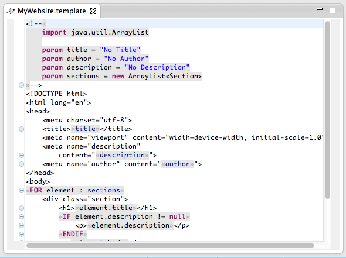

This is a little template language specialized in generating HTML documents.

The language allows web designers to do their job and lets developers put in the dynamic parts. The syntax and terminals are chosen to be readable and allow rendering the templates in the browser as well as in any HTML 5 compatible WYSIWYG editors. Still, when opened in the DSL editor you get the fully featured, statically typed Eclipse editor.
A template language works in two modes: Plain text mode, where everything goes directly into the output and the expression mode, where expressions have to be evaluated and the result is inserted into the text. To switch between text mode and expression mode, we use the French quotes « and ». A document starts in text mode.
The template will be compiled to a Java class with a generate(params) method. You can provide additional information like a package declaration, imports and parameters in the preamble inside a template at the beginning of the document.
We provide additional FOR-ENDFOR and IF-ELSE-ENDIF statements to iterate / branch over fixed text blocks. To distinguish them from the Xbase expressions with the same names, they are in uppercase.
In the runtime workspace, run the GenerateHtml file as a Java application (Run as… → Java Application from the context menu). This will execute the template MyWebsite and print the result to the console.
This is the grammar of the templates DSL:
grammar org.xtext.template.Template
with org.eclipse.xtext.xbase.annotations.XbaseWithAnnotations
generate template "http://www.xtext.org/template/Template"
import 'http://www.eclipse.org/xtext/xbase/Xbase' as xbase
TemplateFile:
'<!--''«'
('package' package=QualifiedName)?
importSection=XImportSection?
params+=Parameter*
body=RichString;
Parameter:
annotations+=XAnnotation*
'param' type=JvmTypeReference? name=ID ('=' defaultexp=XExpression)?;
RichString returns xbase::XBlockExpression:
{RichString}
expressions+=RichStringLiteral
(expressions+=RichStringPart expressions+=RichStringLiteral)*;
RichStringLiteral returns xbase::XStringLiteral:
{RichStringLiteral} value=TEXT;
RichStringPart returns xbase::XExpression:
XExpressionInsideBlock |
RichStringForLoop |
RichStringIf;
RichStringForLoop returns xbase::XForLoopExpression:
{RichStringForLoop}
"FOR" declaredParam=JvmFormalParameter ':' forExpression=XExpression
eachExpression=RichString
"ENDFOR";
RichStringIf returns xbase::XIfExpression:
{RichStringIf}
"IF" if=XExpression
then=RichString
(else=RichStringElseIf | "ELSE" else=RichString)?
"ENDIF";
RichStringElseIf returns xbase::XIfExpression:
{RichStringIf}
"ELSEIF"if=XExpression
then=RichString
(else=RichStringElseIf | "ELSE" else=RichString)?;
terminal TEXT : '»' (!'«')* (EOF|'«');
It becomes quite straightforward once you have understood the escaping. Have a look at the last rule TEXT first: It says that a text starts with a closing French quote and ends with an opening quote or the end of the file. By inverting opening and closing quotes we mark up text instead of expressions.
A TemplateFile starts with a comment and switches to the expression mode for the preamble part consisting of the package declaration, the imports and the parameter declaration. The body is a RichString, which is an alternating sequence of RichStringLiterals and RichStringPart. The RichStringLiterals is essentially a text block (in inverted French quotes). The RichStringPart is either an Xbase expression, a RichStringForLoop or a RichStringIf. The latter inherit from the Xbase expressions with the same name to reuse as much of the Xbase infrastructure as possible. The rest should be easy.
Each TemplateFile is compiled to a Java class with a generate method that takes a lambda expression as a parameter. The lambda expression is called to initialize the template’s properties, by handling the template itself as an argument. This comes along nicely, especially when called from Xtend.
DSL:
<!--«
...
»-->
Java:
public class MyWebsite {
...
public String generate(final Procedure1<MyWebsite> init) {
if (init != null)
init.apply(this);
String result = generate().toString();
// remove leading -->
result = result.replaceAll("^-->\\r?\\n","");
// trim multi-newline to single newline
result = result.replaceAll("\\r?\\n\\s*\\r\\n?", System.getProperty("line.separator"));
return result;
}
}
The corresponding code in the TemplateJvmModelInferrer is:
class TemplateJvmModelInferrer extends AbstractModelInferrer {
...
def dispatch void infer(TemplateFile element,
IJvmDeclaredTypeAcceptor acceptor,
boolean isPreIndexingPhase) {
val simpleName = element.eResource.URI.trimFileExtension.lastSegment
val qualifiedName = if(element.getPackage != null)
element.getPackage + "." + simpleName
else
simpleName
val javaClass = element.toClass(qualifiedName)
acceptor.accept(javaClass)[
...
// generate a method accepting an initializer lambda expression
members += element.toMethod("generate", typeRef(String)) [
parameters += element.toParameter(
"init", typeRef(Procedures.Procedure1, typeRef(javaClass))
)
body = '''
if (init != null)
init.apply(this);
String result = generate().toString();
// remove leading -->
result = result.replaceAll("^-->\\r?\\n","");
// trim multi-newline to single newline
result = result.replaceAll("\\r?\\n\\s*\\r?\\n",System.getProperty("line.separator"));
return result;
'''
...
Each Parameter becomes a Java property, i.e. a field with a getter and a setter.
DSL:
param title = "No Title"
Java:
private String title = "No Title";
public void setTitle(final String title) {
this.title = title;
}
public String getTitle() {
return this.title;
}
In the inferrer, note that we derive the property’s type in three steps: Take the declared one, if there is none, derive it from the initializer and if even that fails, use String as default.
for (param : element.params) {
val type = param.type
?: param.defaultexp?.inferredType
?: typeRef(String)
members += param.toField(param.name, type) [
if (param.defaultexp != null)
initializer = param.defaultexp
]
members += param.toSetter(param.name, type)
members += param.toGetter(param.name, type)
}
The body of the template is compiled into a big private generate() method. We skip the inferrer code here, as it is straightforward. But we had to extend the compiler to support rich strings and the new FOR loop our new control structures. This is described in the next section.
DSL:
»<!DOCTYPE html>
<html lang="en">
<head>
<meta charset="utf-8">
<title>«title»</title>
<meta name="viewport" content="width=device-width, initial-sca...">
<meta name="description"
content="«description»">
<meta name="author" content="«...
Java:
private CharSequence generate() {
StringBuilder _appendable = new StringBuilder();
_appendable.append(ObjectExtensions.operator_elvis(
"-->\n<!DOCTYPE html>\n<html lang=\"en\">\n<head>\n\t<meta...",
""));
_appendable.append(ObjectExtensions.operator_elvis(
this.title,""));
// appends galore
...
We have added additional expressions to Xbase, so we have to tell the compiler how to translate them to Java. The XbaseCompiler has a method doInternalToJavaStatement that dispatches the compilation with regard to the type of the current expression. This is where we have to hook in with our TemplateCompiler:
class TemplateCompiler extends XbaseCompiler {
override protected doInternalToJavaStatement(XExpression expr,
ITreeAppendable it,
boolean isReferenced) {
switch expr {
RichString : {
... }
RichStringForLoop : {
... }
default :
super.doInternalToJavaStatement(expr, it, isReferenced)
}
}
...
For a RichString, we declare a variable _appendable of type StringBuilder and append the results of all its evaluated expressions. Remember from the grammar that every second expression is a RichStringPart which can be null, so we use the ‘elvis operator’ ?: to insert an empty string in this case.
RichString : {
val name = declareVariable(expr, '_appendable')
newLine
append('''
StringBuilder «name» = new StringBuilder();
''')
for (nestedExpression : expr.expressions) {
nestedExpression.internalToJavaStatement(it, true)
newLine
append('''«name».append(ObjectExtensions.operator_elvis(''')
nestedExpression.internalToJavaExpression(it)
append(',""));')
}
}
As our RichStringLiteral inherits from XStringLiteral, it does not need any special treatment. The same holds for RichStringIf and RichStringElseIif. The RichStringForLoop requires special treatment, because as opposed to the XForLoopExpression that always returns null, we want it to return a concatenation of its results. This looks like
RichStringForLoop : {
expr.forExpression.internalToJavaStatement(it, true)
val paramType = typeProvider.getTypeForIdentifiable(expr.declaredParam)
val name = declareVariable(expr, '_forLoopResult')
newLine
append('''
StringBuilder «name» = new StringBuilder();
for (final ''')
serialize(paramType, expr, it);
append(''' «declareVariable(expr.declaredParam,
makeJavaIdentifier(expr.declaredParam.name))» : ''')
internalToJavaExpression(expr.forExpression, it)
append(") {").increaseIndentation
expr.eachExpression.internalToJavaStatement(it, true)
newLine
append('''«name».append(''')
expr.eachExpression.internalToJavaExpression(it)
append(');')
decreaseIndentation.newLine.append("}")
}
The compiler now knows how to handle the new expressions in a statement context. In addition, we have to teach it to compile them in an expression context. This is what the second method does:
override protected internalToConvertedExpression(XExpression obj,
ITreeAppendable it) {
if (hasName(obj))
append(getName(obj))
else
super.internalToConvertedExpression(obj, it)
}
As usual, we have to bind our TemplateCompiler in the TemplateRuntimeModule in order to be picked up as the XbaseCompiler in the context of our language.
The type system has to know how to determine the types of our new expressions. This is the job of the TemplateTypeComputer: RichString becomes a StringBuilder. As opposed to its super type XForLoopExpression a RichStringForLoop is of type StringBuilder as well. The for-loop’s body is expected to have a type, as the results must be concatenatable, which is different from Xbase’s for-loop.
class TemplateTypeComputer extends XbaseWithAnnotationsTypeComputer {
def dispatch computeTypes(RichString expression, ITypeComputationState state) {
super._computeTypes(expression as XBlockExpression, state)
state.acceptActualType(getTypeForName(StringBuilder, state))
}
def dispatch computeTypes(RichStringForLoop expression, ITypeComputationState state) {
super._computeTypes(expression as XForLoopExpression, state)
state.acceptActualType(getTypeForName(StringBuilder, state))
}
}
Like the compiler, we have to bind this implementation in our runtime module as well.
The RichStringLiterals still have the French quotes around their values. As we do not want to see them in the output, we have implemented the TemplateValueConverterService and bound it in the runtime module.
The French quotes are not easy to type on every keyboard. We have adapted content assist to insert them when the cursor is inside a TEXT terminal:
public class TemplateProposalProvider
extends AbstractTemplateProposalProvider {
@Override
public void complete_TEXT(EObject model,
RuleCall ruleCall,
ContentAssistContext context,
ICompletionProposalAcceptor acceptor) {
acceptor.accept(new CompletionProposal("«»",
context.getOffset(), 0, 1));
}
}
Sometimes it is hard to see whether you are in text mode or in expression mode. To give the user better feedback, we have changed the way the text is highlighted. This customization consists of two parts: Add new highlighting styles in the TemplateHighlightingConfiguration and apply them to the text in the TemplateHighlightingCalculator. As this is rather extensively covered in the Xtext documentation, we skip a deeper explanation here.